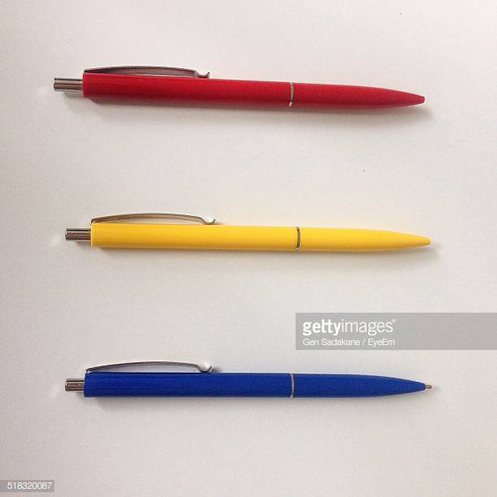

Welcome to Dylan Childers' WebDev Profile!
Layouts
A layout similar to the style of a blog post.
A Liquid Layout that uses percentages to allow the contents to stretch.
A page layout with three rows of equal size. 
WebDev Resources
Name
Link
Dylan's GitHub
Github
CodePen
Codepen Home
W3C Schools
W3C Schools Home
StackOverflow
StackOverflow Home
DevDocs
DevDocs Dashboard